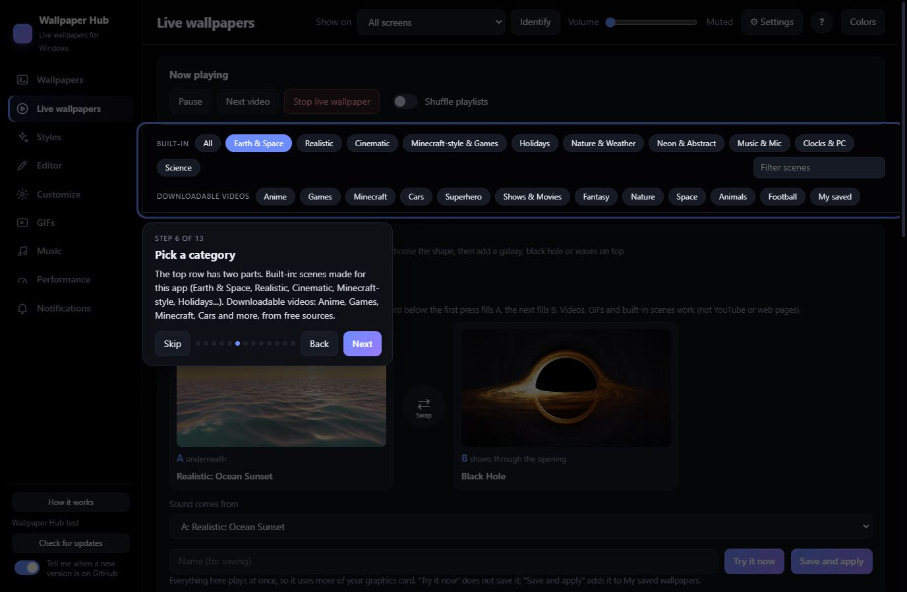
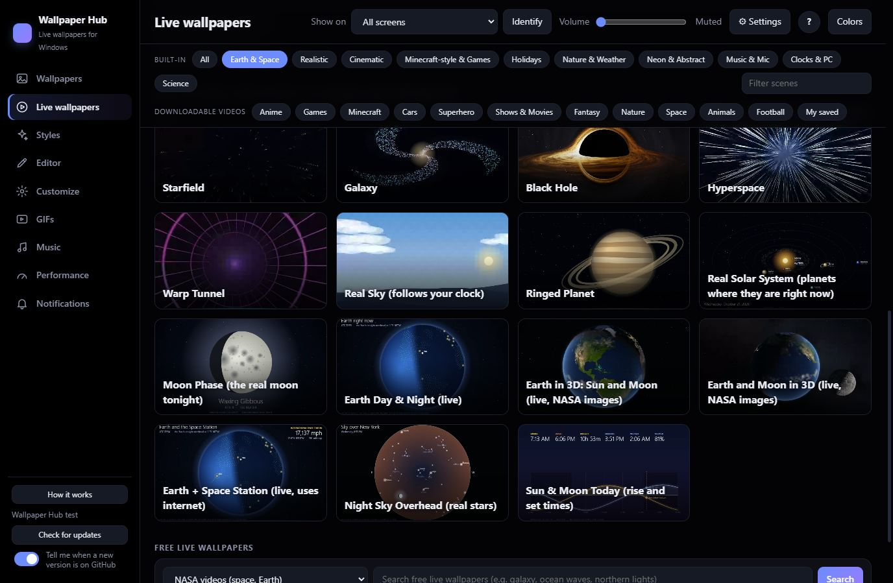
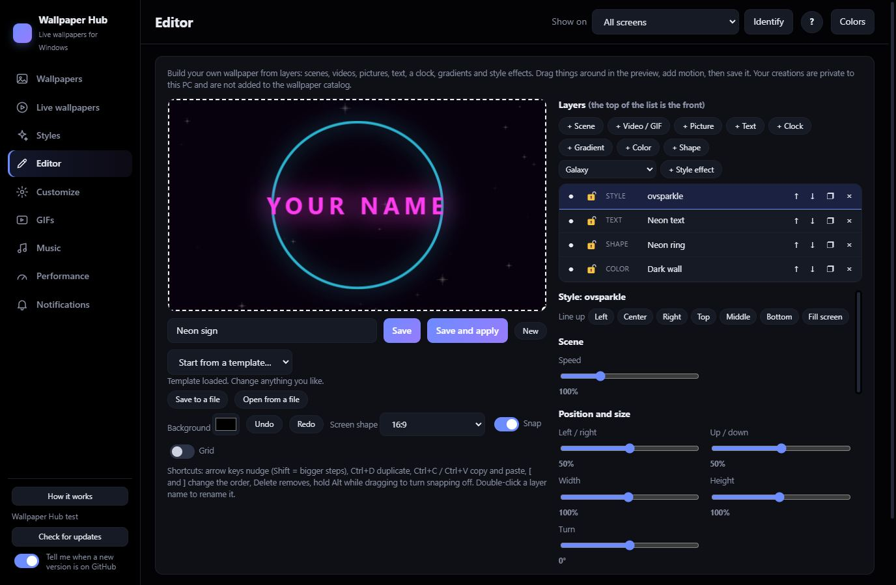
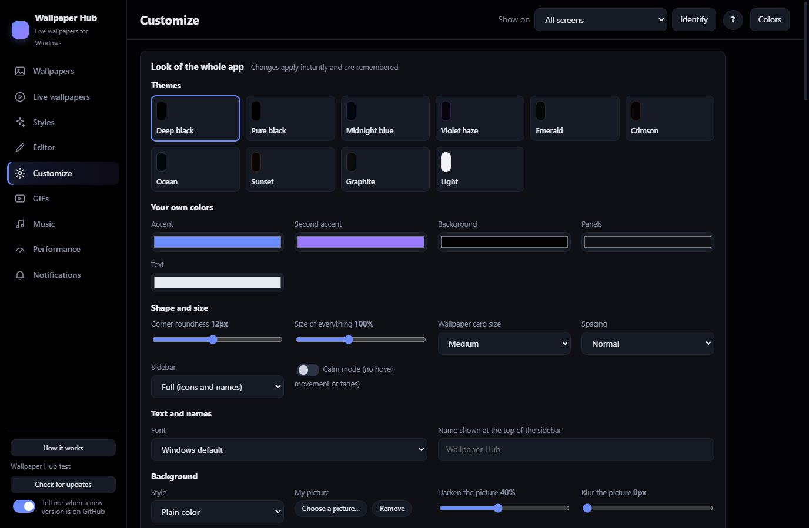
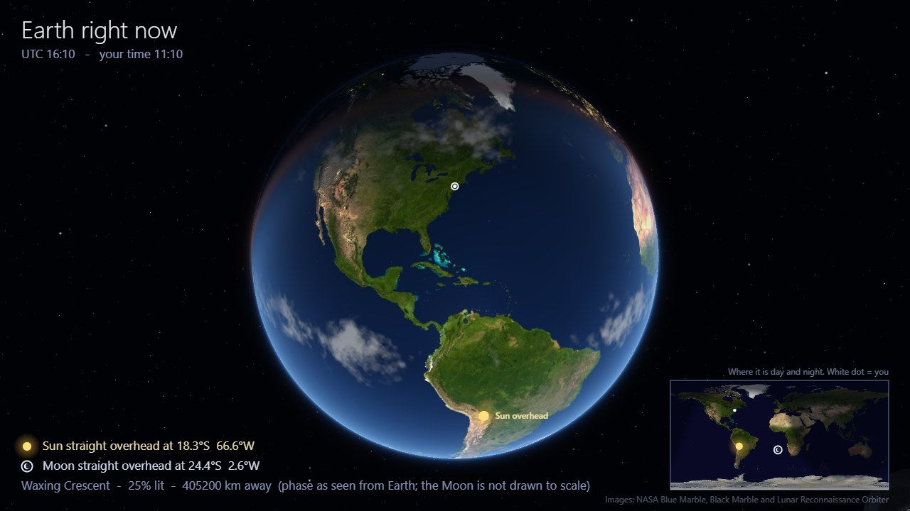

1Install it
- Open the Releases page and download Wallpaper-Hub-Setup. (Prefer no install? Get the Portable file instead. It runs from wherever you put it.)
- Double-click it. It installs in a few seconds and adds a shortcut.
2Take the one-minute tour
The first time you open the app, a short guided tour walks you through every tab. You can skip it, and you can open it again any time with the round ? button at the top, or the How it works button at the bottom of the left menu.

3Still wallpapers (the Wallpapers tab)
- Open Wallpapers. Type what you like (space, anime, cars, a game) and press Search, or just tap a category button: Space, Anime, Games, Minecraft, Cars, Nature, Cyberpunk and more.
- Click a picture to look at it, then press Apply. That is your new wallpaper.
- The star saves a picture to Favorites (the first button in the category row).
- Auto-change (top right) swaps the wallpaper by itself every so often.
4Live wallpapers (the Live wallpapers tab)
Live wallpapers are animated and play behind your icons. They pause by themselves while a game or fullscreen app is open, so they stay out of the way.

5Make it yours
Editor: build your own
Stack layers (scenes, videos, pictures, text, a clock, shapes and effects), drag them around, add motion, or start from a template. Snapping guides, align buttons, undo/redo, and layers that only show at certain times of day are all there. What you make stays on your PC.

Customize: change anything
Change how the app looks (10 themes, your own colors, fonts, backgrounds, glass, tab order, even your own CSS), and tweak any wallpaper: speed, colors, blur, zoom, vignette, film grain, your own text, and more. Apply a tweak to every live wallpaper, to just one, to one screen, or on a time-of-day schedule. Every control has a Back to normal button.

6Earth in 3D
Two live scenes show a real-time Earth built from NASA pictures, with the real day and night line, the Sun, and the Moon where they really are right now. They work offline.

Imagery: NASA Blue Marble and Black Marble (Earth Observatory / Goddard Space Flight Center) and Lunar Reconnaissance Orbiter maps (NASA/GSFC/Arizona State University).
7Help and tips
The wallpaper is not showing
Make sure you pressed Apply and that Stop live wallpaper was not used afterwards. After sleep or a display change the app puts your wallpapers back on its own.
I want a wallpaper to stay off
Press Stop live wallpaper. It also switches off that screen's playlist, so it stays stopped after a restart.
Desktop icons
In Settings you can let icons fade away while a wallpaper shows, with only the one under your mouse appearing. It is off until you turn it on, and icons always come back when you turn it off or quit.
Closing the window
Closing the window keeps Wallpaper Hub running in the tray (by the clock). Right-click the tray icon to open it, pause, or quit.
Back up your look
In Customize, use Save all my customizations to a file. Load it later to bring everything back.
On your phone
There is a phone version too: open the phone app in your phone's browser and choose "Add to Home Screen".
Privacy
No accounts, no analytics, no telemetry. The app only contacts the sites it needs, and everything is stored on your PC. See the full privacy note.